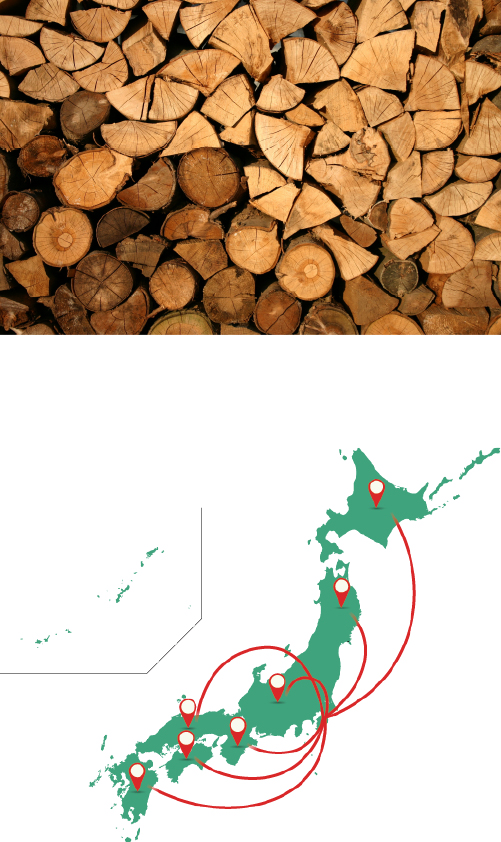
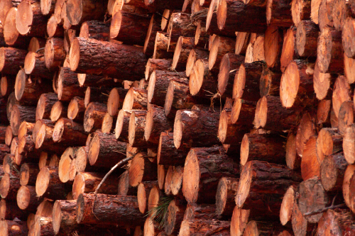
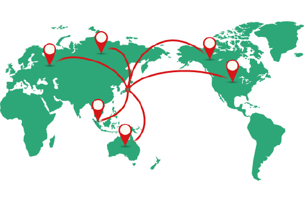
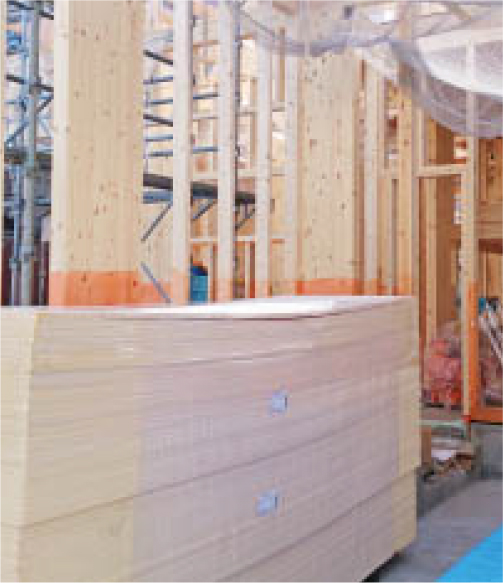
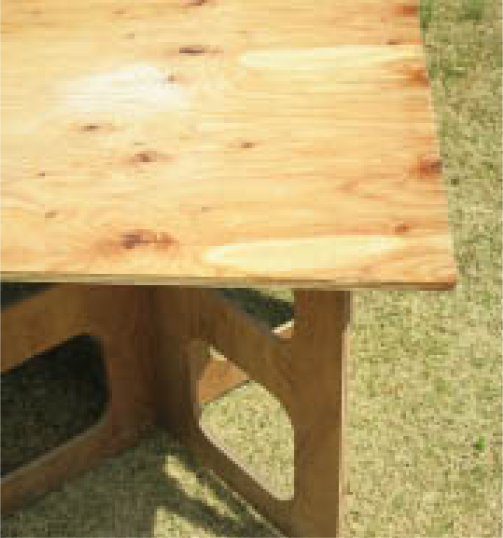

ひらいの原点は、木村商です。
日本の文化は「木の文化」と言っても過言ではないでしょう。
国土の70%は森林。その自然とともに日本は発展して来ました。
21世紀に入り、あらためて、「木の文化」見直されています。
木村商として創業から半世紀以上経過している経験を活かし、全てのお客様に最高の「木の文化」を提案します。
「木のめくもりと、地球へのやさしさ」
国産村
国内に生育する原材料（原木）に、製材したり加工を施した木材。国産材は内地材とも呼ばれ、樹種も杉・ヒノキ・松などさまざまです。
国産村のメリット
日本には日本独特の四季があり、日本の環境に合った木が生育しています。その日本の気候に合った木で家を建てることが、もっとも理にかなっています。加えて、輸送にかかる時間も少なく、省エネルギーにもつながります。
地産地消
国産材が日本の家に適していることはもちろん、地域に対しても様々な効果があります。 林業、木材加工業、建築業などを中心に地域経済の活性化につながり、さらには、森林にきちんと手がかけられることにより、洪水や土砂災害といった自然災害からも地域を守ってくれます。
日本全国から仕入れ可能
日本は国土の約2/3が森林で、戦後の植林によって人工材を中心に森林資源は増え続け、日本で1年間に消費される木材の量とほぼ同じ量が増え続けています。そんな日本だからこそ、全国各地からの仕入れをすることができます。ひらいでは顔の見える業者とお付き合いし、品質の確かな国産材を日本各地から安定的に仕入れ、提供することができます。さらに、自社にて加工まですることによって、価格もおさえることができます。

輸入材
国外から輸入される木材。外材とも呼ばれ、主な輸入先はカナダ・オーストラリア・ロシア・アメリカ・マレーシア・欧州です。
輸入材のメリット
大量仕入れのスケールメリットによるコストパフォーマンスに優れ、太くて大きいものが欲しい時に簡単に揃えることができます。また、長い木材などの国産材にはあまり見られない特徴を持っているものや、もともとの材質が加工性や耐久性に優れたものもあります。


適材適所
輸入材と国産材を、適材適所でバランス良く使っていくことも必要です。 ウッドデッキなどには、加工しやすくDIYに向いているウェスタンレッドシダーを使うなど輸入材と国産材それぞれのメリットを活かし、使い分けていくことでより良い暮らしを実現できます。
世界中から仕入れが可能
近年お客様のニーズが多様になり、求められる木材も多種多様になってきました。 ひらいは、そのニーズにお応えするために世界各地から選び抜かれた輸入材を仕入れて、安定した提供をしています。
集成材
ひき板または小さな角材を集め、接着して作られた材です。品質はJASによって規定されており、建物内部に使用される造作用、構造部材の構造用に大別されます。
集成材の特徴
幅や厚さ、長さ方向を自由に調整することができ、自由なデザインや構造計算に 必要とされる強度の部材に供給することができます。 また、強度性能にばらつきが少なく、品質が均一で信頼性の高い部材です。
集成材の耐火性能
表面は焦げて炭化層ができ、内側への酸素の供給が絶たれるので 燃えにくくなります。この炭化層が保護層になるので、内部は発火点以下に 抑えられ、構造上必要な強度を保ちます。ひき板または小さな角材を集め、接着して作られた材です。品質はJASによって規定されており、建物内部に使用される造作用、 構造部材の構造用に大別されます。


合板
原木を薄くした単板（ベニヤ）を何枚も木目が交互に直交するように重ねて張り合わせ、1枚の板にした木材です。
合板の特徴
強く、幅が広く、伸び縮みの少ない優れた木材。重さの割にその強度が大きく、面としての強さで 耐震性に優れています。切断や釘打ちが容易で木造住宅を始めとした広範囲な分野で利用されています。
合板の需要
住宅 ： 壁・床・屋根下地・フローリング・内装材・階段・下地補強材・ドア・扉など 家具 ： タンス・机・椅子・下駄箱・食器棚・システムキッチンなど
CLT
Cross Laminated Timber（クロス・ラミネイティド・ティンバー）の略で、欧州で開発された 工法で、CLTは板の層を各層で互いに直交するように積層接着した厚型パネルのことを呼びます。
CLT工法の特徴
それぞれのパネルが柱・梁となり、接合部はビスと金具による接合が基本なので、従来の木造と比べて施工がシンプルになります。パネルの加工は工場で行われるため、現場での施工が少なく工期が短くなります。CLTパネルは熱伝導率がとても低いので、優れた断熱性能を発揮します。 また、高い強度とPC（プレキャスト・コンクリート）パネルと比べて1/4程度の重量で建物を軽く強くし、優れた耐震性能も発揮します。


Copyright©HIRAI Co.,LTD.ALL RIGHTS RESERVED